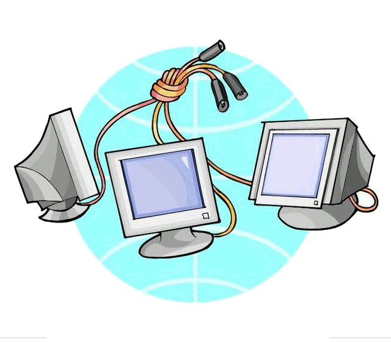
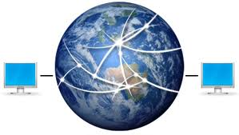

| Una rete di computer mette in collegamento, tramite uno o pimezzi di
trasmissione, un numero variabile di postazioni distanti l'una dall'altra. In
base alla distanza tra i computer possiamo distinguere tipi diversi di reti informatiche.
La rete LAN (Local Area Network) è una rete locale composta da computer
che risiedono tutti nello stesso ambiente di lavoro. Sono situati, quindi, in
unarea geografica circoscritta (all’interno dello stesso edificio
o edifici adiacenti). I computer, collegati fisicamente tra loro, possono condividere
file, programmi, periferiche, ecc.
Le reti WAN (Wide Area Network) o reti geografiche, coprono lunghe distanze,
arrivando oltre i confini geografici di città e stati. Le connessioni
possono avvenire tramite ponti radio, reti pubbliche o addirittura stazioni satellitari
per le telecomunicazioni.
Tra le altre tipologie di reti troviamo: MAN (Metropolitan Area Network), per reti geografiche riguardanti una zona metropolitana e Internet, interconnessione di reti locali e geografiche in una rete globale. Grazie alle reti possiamo condividere le risorse all’interno di un gruppo di lavoro, come ottenere informazioni da archivi in comune, scambiare informazioni per posta elettronica, lavorare insieme su uno stesso documento. Il groupware è il software specializzato per la gestione del lavoro di gruppo. Il Server è un computer che fornisce informazioni e/o risorse agli utenti di una rete che si collegano tramite il proprio computer (Client). La trasmissione delle informazioni può avvenire da un solo utente a molti utenti (tipo Multicast o Broadcast) o da un utente a un altro (tipo peer to peer o point to point). |
|  |
|  |
IZADOR NOGAJ |